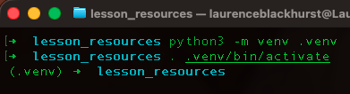

The fundamental data structures of Python: lists, tuples, dictionaries, etc. are powerful tools for data storage and retrieval. However, they do not readily extend to numerical processing scenarios.
As researchers much of our data comes in numerical forms and not always in perfect condition. We therefore typically want to bring in the data, augment or clean it, and then visualise it in a plot. This is where third-party packages can come in useful, specifically two, NumPy and pandas. These packages facilitate mathematical operations on the whole data structure, as well as a multitude of functions and tools to perform common data exploration techniques. The former, NumPy, works through a NumPy array that is similar in look to a list, whereas the latter pandas dataframes are an extension of arrays into a matrix structure. This two-dimensional structure of rows and columns is what you would recognise as a spreadsheet.
This first lesson will look through NumPy, to launch us into pandas. The content throughout will not be an exhaustive run through of everything NumPy and pandas have to offer, rather a curated overview of the basics plus the tools and situations we have found are used frequently in the research sciences.
Third-party package: Packages created by external developers that must be installed separately (typically using pip), before they can be imported. Examples include pandas, numpy and matplotlib. These provide specialised functionality for specific fields.
Python Environments
The following section is for help with the setup of Python environments on your local computer, if you so wish to work that way. Environment and package handling are all managed for you in your CodeSpace, so if you do not wish to engage with this topic at the current time, then you can carry on working without following or completing the following.
However, it is useful to implement this as soon as you feel ready, as it is the standard way of working.
As we start using modules that rely on third-party packages, it's worth revisiting the environment setup covered in PF3 and the Python Orientation materials.
Many of you have been working inside a GitHub Codespace, but in normal practice you would develop code on your local machine. There, you set up your GitHub repository within your standard file system, either from scratch or by cloning an existing repository from GitHub (see the orientation materials). Once that's done, you'll want a dedicated Python environment for that project.
A Python environment is an isolated Python installation with its own set of packages at specific versions. When you install Python on your local machine, you get a base installation which good practice dictates should be reserved for tasks that only need base Python and its built-in modules (see PF3). For anything beyond that, you create a fresh environment.
This matters because one of Python's great strengths is its ecosystem of third-party packages, several of which we'll be using in this module. Most packages depend on other packages, and those dependencies are continuously evolving. A significant update to one package can change its syntax in ways that break anything relying on it. The solution is to pin packages to specific versions — ignoring updates and sticking with what you know works. This is especially relevant for smaller scientific packages, which may be updated infrequently or abandoned once funding ends. Keeping one environment per project ensures that working on something new never inadvertently breaks something old.
The example below illustrates how version requirements can conflict:
Example:
- Project A might need pandas version 1.5.0 and numpy version 1.20.0
- Project B might need pandas version 2.0.0 and numpy version 1.24.0
Creating an environment
Small project specific Python environments are often referred to as virtual environments or venvs. These will be created inside the individual repositories (folders) that contain all the code and data associated with a project. They can be created in one of two ways, firstly using the native method which uses the command venv and the package installer pip. The second is through a package manager system, such as Anaconda (conda) or UV. In this section we will just cover using venv and pip.
If you wish to use conda or UV, please see their websites for how to install and their basic usage. Additionally, inside the Environments folder inside your Data-Processing repositories there is a README file containing instructions on how to create an environment with all the packages needed for this module using pip, conda, and uv.
Creating an environment: venv / pip
Video unavailable:
No URL provided
Firstly, open the terminal (click the link for more information in the orientation materials) and navigate to the folder you want to create the venv in, i.e. your project folder. You can also open the terminal within VS Code using Ctrl + ` (backtick). This will directly open it in your project folder and is the same as opening the native terminal application.
Once in the right folder, simply type the following command:
python -m venv environment_nameWhere
environment_name is replaced by the name you want to give your virtual environment. The standard name to use, and the name UV and VS Code will use, is .venv. The . makes the file hidden, so it won't show up in your file browser and -m (a flag) tells the terminal to find the venv module for execution.python -m venv .venvThat's it, a virtual environment is now created for your project. This virtual environment should now be selectable in the Python environments drop-down in VS Code. However, it will only contain a copy of Python with no additional third-party packages. To install packages, we need to activate the environment first.
Activation differs between Windows and Unix-like systems (Linux, macOS).
Unix (Linux, macOS) where named .venv
source .venv/bin/activatesource can often be shortened to its alias -->
.. .venv/bin/activateWindows where named .venv
.venv\Scripts\activateOnce called you should see (.venv) appear to the left of the folder name in the terminal. See the image below for what this should look like

Workflow Summary
- Navigate to your working folder
- Create the virtual environment with
python -m venv .venv - Activate the virtual environment with
. .venv/bin/activate
Activation of the venv is just for the use of it inside the terminal, see the Orientation material for more information on this.
You do not need to activate it for it to work in a jupyter notebook. Any notebook saved inside the folder with the venv should be able to use it, by selecting it from the select kernel button as is done inside CodeSpaces.
Video unavailable:
No URL provided
Installing Packages
You can now install any package using pip:
pip install pandasNow, when you run a script or open a jupyter notebook you can select your virtual environment, running your code which utilises third-party packages.
Installing from a file
Often, someone who's created a bit of code will provide a file that contains all the packages and the specific versions needed to others. Utilising this, you can install all the packages at once into the venv. Typically, when working with venv and pip these files are named requirements and are a text file: i.e. requirements.txt. If you head to the Environments folder in your repository for DP1 there will be one there. They will always have this structure:
pandas==2.3.3
numpy==2.1.3Where on the left is the package name (pandas), followed by some conditional operators (==), followed by a version number (2.3.3).
Here,
== means the package must be version 2.3.3. If there was nothing after the package name the latest version would be installed. You can also use < and > in combination with = to ensure a minimum or maximum version. See the table below for all the operator combinations.| Operator | Meaning | Example | Result |
|---|---|---|---|
== |
Exact version | package==3.0.2 |
Only 3.0.2 |
> |
Greater than | package>3.0.2 |
3.0.3, 3.1.0, 4.0.0, etc. |
< |
Less than | package<3.0.2 |
3.0.1, 3.0.0, 2.9.9, etc. |
>= |
Greater than or equal | package>=3.0.2 |
3.0.2, 3.0.3, 3.1.0, etc. |
<= |
Less than or equal | package<=3.0.2 |
3.0.2, 3.0.1, 3.0.0, etc. |
!= |
Not equal | package!=3.0.2 |
Any version except 3.0.2 |
~= |
Compatible release | package~=3.0.2 |
3.0.2, 3.0.3, 3.0.9 (but not 3.1.0) |
| (none) | Latest | package |
Newest available version |
To install from this file:
- Firstly ensure that it is inside the folder/workspace you are interested in.
- Next, check the contents look correct by visual inspection
- Finally, activate the venv and then call the following in the terminal
pip install -r requirements.txtInstalling Packages
1.
Clone your DP1 repository to your local computer. Setup a virtual environment in the folder using the requirements.txt that is inside the Environments folder. You will need to move it into the main folder or change the path given to pip install, i.e. to pip install -r ./Environments/requirements.txt.